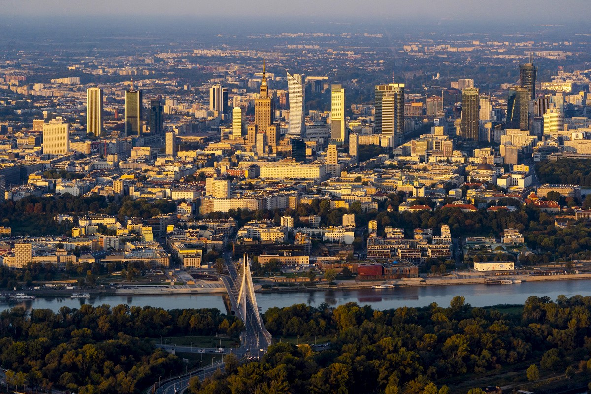
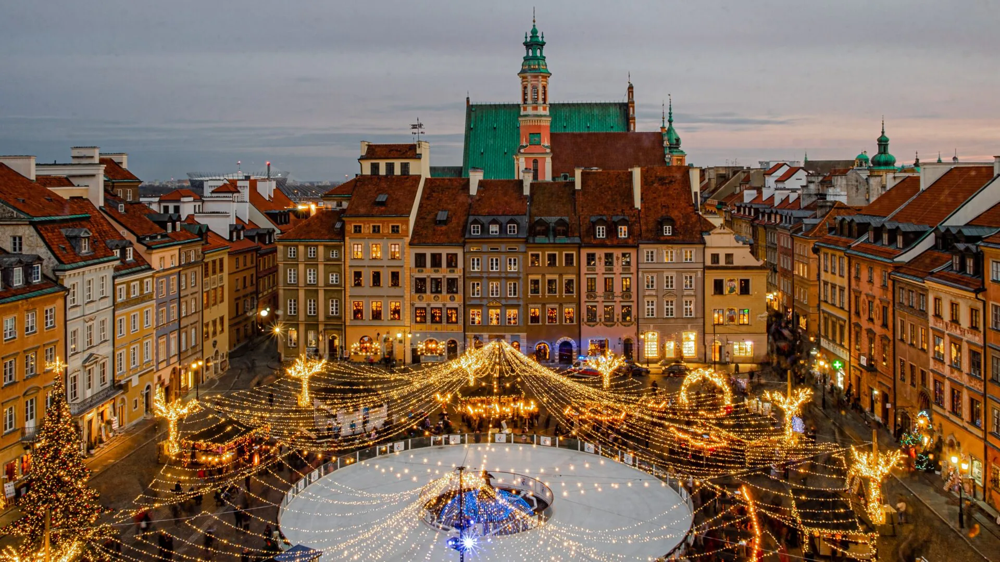
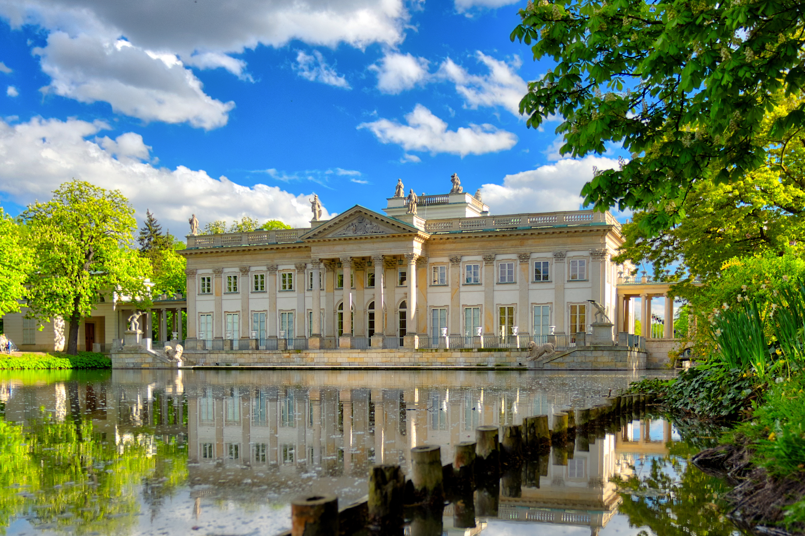

Warszawa to piękne miasto
Rzym ::: Kielce ::: Warszawa :::
Mam tak samo jak ty Miasto moje, a w nim Najpiękniejszy mój świat Najpiękniejsze dni Zostawiłem tam kolorowe sny Kiedyś zatrzymam czas I na skrzydłach jak ptak Będę leciał co sił-tam Gdzie moje sny I warszawski dzień Kolorowe dni Gdybyś ujrzeć chciał nadwiślański świt Już dziś wyruszaj ze mną tam Zobaczysz jak przywita pięknie nas Warszawski dzień Mam tak samo jak ty Miasto moje a w nim Najpiękniejszy mój świat Najpiękniejsze dni Zostawiłem tam kolorowe sny Gdybyś ujrzeć chciał Nadwiślański świt Już dziś wyruszaj ze mną tam Zobaczysz jak przywita pięknie nas Warszawski dzień Zobaczysz jak przywita pięknie nas Warszawski dzień Warszawski dzień Warszawski dzień
Stare Miasto

Stare Miasto w Warszawie, zwyczajowo Starówka – dawne miasto Stara Warszawa, najstarszy ośrodek miejski Warszawy będący zwartym zespołem architektury zabytkowej, przeważnie z XVII i XVIII wieku o średniowiecznym układzie zabudowy, otoczone pierścieniem murów obronnych z XIV–XVI wieku. Od 1980 znajduje się na liście światowego dziedzictwa UNESCO. Współcześnie najstarsza część i obszar MSI w dzielnicy Śródmieście.
Łazienki Królewskie

Łazienki Królewskie to zabytkowy zespół pałacowo-ogrodowy, dawna letnia rezydencja króla Stanisława Augusta Poniatowskiego. Znajduje się tu słynny Pałac na Wyspie, a teren obejmuje malowniczy park, ogrody (chiński, romantyczny, modernistyczny) oraz liczne klasycystyczne budowle, takie jak Stara Oranżeria czy Pomnik Chopina.